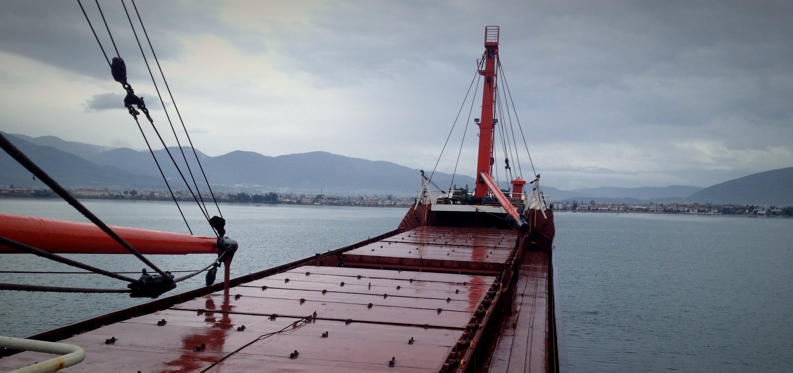

Where it began
Turkey’s south coast — family, hotels and the sea that gave him his name. Hospitality was the family business, and the hotel lobby was the first classroom.
TurkeyHomeJourney
From breathtaking landscapes to captivating moments — photography has always been my escape and inspiration. Follow the route, chapter by chapter.
From the Turkish coast to the mountains of Austria, a summer in Rio and a train ride to a climate summit — every stop changed the way of thinking.
Seven chapters, one story — scroll through the places that shaped it.

Turkey’s south coast — family, hotels and the sea that gave him his name. Hospitality was the family business, and the hotel lobby was the first classroom.
Turkey
A new country, a new language and one of Austria’s top hospitality schools. The mountains became home base for everything that followed.
Home base
Gold and bronze at the European tourism-school championships (AEHT) — and a reception at the Hofburg hosted by the Federal President.
AEHT
Ten days of science, sea air and big questions on the NANO research camp — the start of a long fascination with energy and the environment.
NANO
A radio call-out on Ö3, a dream internship and a summer at the Olympic Games — documented day by day in the travel diary.
Olympics
Choosing the slow way to the COP24 climate conference: fewer emissions, more conversations, and a story about how we travel.
COP24
An application to Kaospilot — because design, change-making and a little chaos belong together.
KaospilotThe world is a book, and those who do not travel read only one page.Saint Augustine